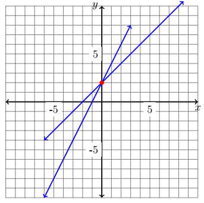

CH 4.1 – Two Variable Systems of Equations
Throughout this whole course we've been learning to solve different types of equations. In this section we are going to continue that process; however, we will be looking at multiple equations at a time. Systems of equations are used throughout the real world to find a point of equilibrium — a point at which all of the equations intersect. This is useful in business applications to understand where a company would break even if one function represented their profits and one equation represented their cost to produce the product.
We have three major methods to determine the solution to a system of equations:
Methods for Solving Systems of Equations
- Graphing
- Substitution
- Elimination
Solving Systems of Equations by Graphing
When it comes to solving systems of equations there are several different types of solutions you may end up with. The objective is to find the point at which all of the equations intersect. Whether you have linear or non-linear equations can change the type of solution(s) that is possible. Let's look at the linear options first.
![A gray box containing three side-by-side coordinate planes illustrating the three possible outcomes for a linear system of equations. The left plane is labeled One Solution and shows two blue lines crossing at a single point, with a note that this is a Consistent Solution. The center plane is labeled No Solution and shows two blue parallel lines that never intersect, with a note that this is an Inconsistent Solution and the lines are parallel. The right plane is labeled Infinite Solutions and shows a single blue line (both equations are the same), with a note that this is a Consistent Solution satisfied by any real number.](images/4_1_1.png)
A system of equations that has one or more solutions is known as consistent, whereas a system with no solutions is inconsistent. When dealing with nonlinear systems those three options are still possible — we just add a fourth. With a nonlinear system we have the option of more than one solution that isn't infinite.
![A gray box containing three side-by-side coordinate planes illustrating possible outcomes for a nonlinear system of equations. The left plane is labeled One Solution and shows a blue circle with a blue line tangent to it at exactly one point, with a note that the line touches the circle but does not go through it. The center plane is labeled No Solution and shows a blue parabola with a blue line that does not intersect it, with a note that there is no solution. The right plane is labeled Multiple Solutions and shows a blue parabola with a blue line crossing it at two distinct points, with a note that the system has two solutions.](images/4_1_2.png)
Not pictured above is the option for infinite solutions — this would happen when the equations are the same, making it so any real number satisfies the system.
So, how do we solve a system of equations graphically? It's rather simple — you graph the two (or more) equations and find where they intersect on the graph.
Example
Solve the system of equations below graphically and identify the solution.
-
\(y = 2x + 3\)
\(y = -x + 6\) -
\(2y = 4x + 4\)
\(y = x + 2\) -
\(x^2 + y^2 = 16\)
\(y = x + 4\) -
\(y + 1 = x^2\)
\(2y + 3x = 4\)
Solution
System 1: \(\;y = 2x+3\) and \(y = -x+6\)
Both equations are in slope-intercept form (\(y = mx + b\)), which means we place a point on the \(y\)-axis at \((0, b)\) and use the slope \(m\) to rise and run to the next point. If this is a skill you need to brush up on, consult your instructor or an online resource.

System 2: \(\;2y = 4x+4\) and \(y = x+2\)
Notice that the first equation simplifies to \(y = 2x + 2\), and the second is \(y = x + 2\). We graph both linear equations.

System 3: \(\;x^2 + y^2 = 16\) and \(y = x+4\)
The equation \(x^2 + y^2 = 16\) is the equation of a circle with radius 4 and center \((0, 0)\). Graphing that along with the line \(y = x + 4\):

In this nonlinear system the line intersects the circle in two locations.
System 4: \(\;y + 1 = x^2\) and \(2y + 3x = 4\)
Rewriting each equation in a familiar form: the quadratic becomes \(y = x^2 - 1\), and the linear equation simplifies to \(y = -\dfrac{3}{2}x + 2\).

Exercises
Exercises to be added at a later date.